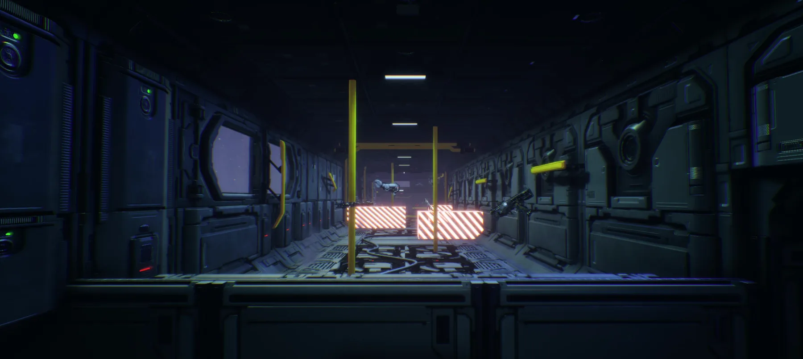
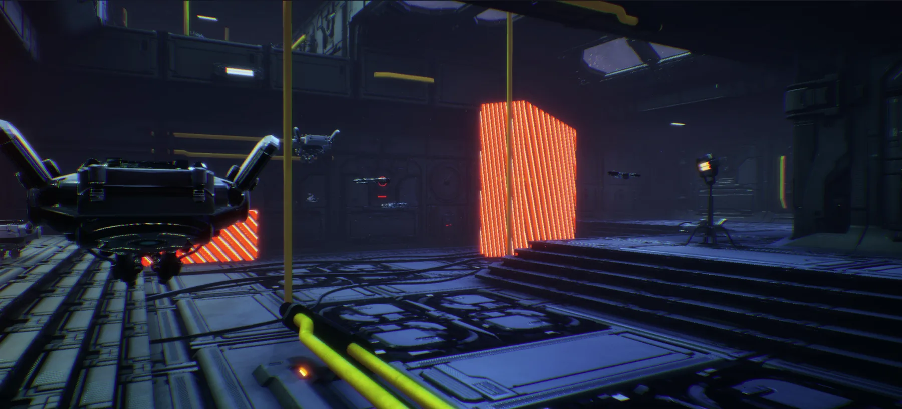
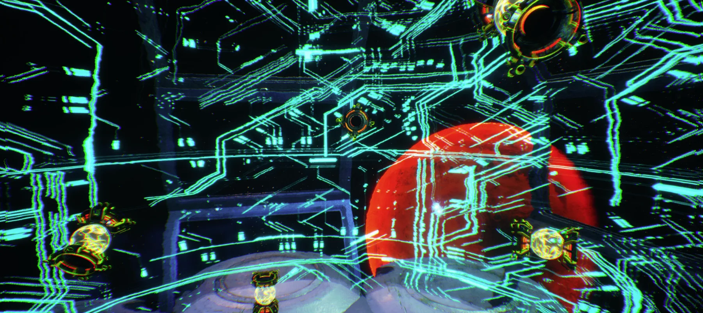

《Void Vector》VR 游戏
VR 动作闯关游戏 · 零重力太空站
 观看视频
观看视频
零重力太空站 · 游戏演示
原站视频/Google Drive零重力太空站
玩法与场景
开发过程
旧版项目记录
一、作品视频展示
第一人称体验视频
Google Drive 视频drive.google.comdrive.google.com ↗二、作品介绍
《Viod Vector》是一款动作闯关的VR游戏，玩家在一个因事故而失重、充满未知危险的太空站环境中醒来。 抓握是移动、固定自身、操作环境的核心;射击是应对威胁、解决谜题的关键。故事围绕探索、求生和揭开 太空站背后的秘密展开。
核心玩法：玩家需要借助抓握栏杆在零重力的空间内移动，同时配合掌心炮的后坐力在空间站中进行移动。
场景美术：整体以写实和冷灰色调为主，营造危机四伏的沉浸感，可抓取的栏杆设计为黄色为主，帮助玩家 快速找到。危险的失误以红色为主，提醒玩家注意。


